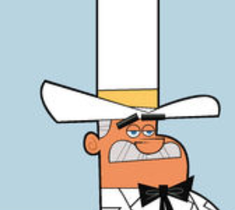
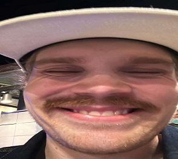

Antton Orpana
Historian kandi, prosessinhoitaja, tradenomi "Kolmas ala toden sanoo"

Tuukka Santanen
Penaalin terävin kumi
Niko Karhu
Myös mukana ryhmässä
Aaro Nieminen
Iso Javascript fani

Ilmari Takkunen
Fiksu ja filmaattinen